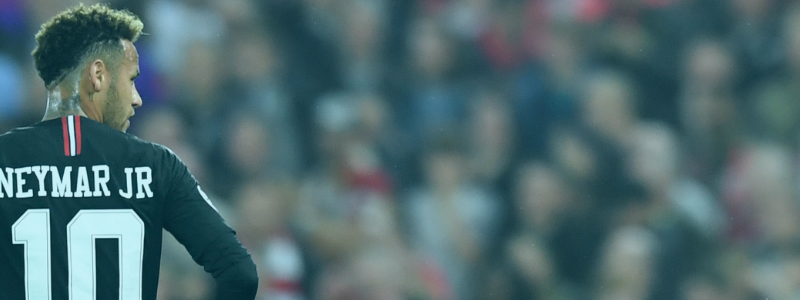

Informações Pessoais

Nome: Neymar da Silva Santos Júnior
Data de Nascimento: 5 de fevereiro de 1992
Posição: Atacante
Biografia
Neymar é um jogador de futebol brasileiro amplamente reconhecido por sua habilidade e destreza. Ele começou sua carreira no Santos FC e posteriormente jogou pelo Barcelona e pelo Paris Saint-Germain. Neymar também é a peça chave da seleção brasileira e tem contribuído para sua equipe em várias competições internacionais.